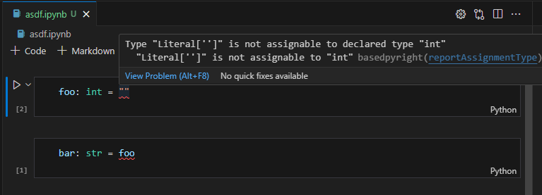
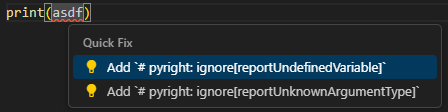
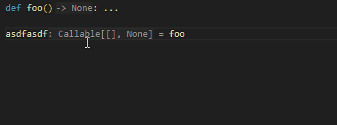
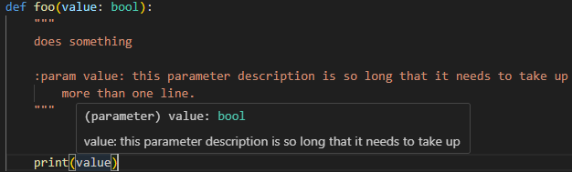
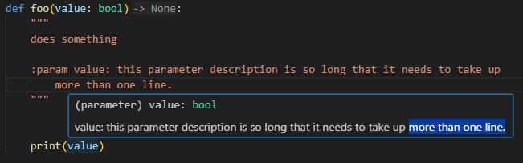
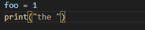
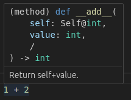
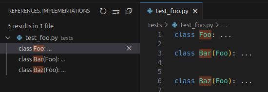

pylance features
basedpyright re-implements some of the features that microsoft made exclusive to pylance, which is microsoft's closed-source vscode extension built on top of the pyright language server with some additional exclusive functionality (see the pylance FAQ for more information).
the following features have been re-implemented in basedpyright's language server, meaning they are no longer exclusive to vscode. you can use any editor that supports the language server protocol. for more information on installing pyright in your editor of choice, see the installation instructions.
jupyter notebooks
just like pylance, the basedpyright language server works with jupyter notebooks:

however unlike pylance, basedpyright also supports type-checking them using the CLI:
>basedpyright
c:\project\asdf.ipynb - cell 1
c:\project\asdf.ipynb:1:1:12 - error: Type "Literal['']" is not assignable to declared type "int"
"Literal['']" is not assignable to "int" (reportAssignmentType)
c:\project\asdf.ipynb - cell 2
c:\project\asdf.ipynb:2:1:12 - error: Type "int" is not assignable to declared type "str"
"int" is not assignable to "str" (reportAssignmentType)
2 errors, 0 warnings, 0 notes
code actions
import suggestions
pyright only supports import suggestions as autocomplete suggestions, but not as quick fixes (see this issue).
basedpyright re-implements pylance's import suggestion code actions:
ignore comments
basedpyright also re-implements pylance's code actions for adding # pyright: ignore comments:

Note
# type: ignore comments are not supported by this code action because they are discouraged, see here for more information.
semantic highlighting
| before | after |
|---|---|
basedpyright re-implements pylance's semantic highlighting along with some additional improvements:
- supports the new
typekeyword in python 3.12 Finalvariables are coloured as read-only
initial implementation of the semantic highlighting provider was adapted from the pyright-inlay-hints project.
inlay hints
basedpyright contains several improvements and bug fixes to the original implementation adapted from pyright-inlay-hints.
basedpyright also supports double-clicking to insert inlay hints. unlike pylance, this also works on Callable types:

docstrings for compiled builtin modules
many of the builtin modules are written in c, meaning the pyright language server cannot statically inspect and display their docstrings to the user. unfortunately they are also not available in the .pyi stubs for these modules, as the typeshed maintainers consider it to be too much of a maintenance nightmare.
pylance works around this problem by running a "docstring scraper" script on the user's machine, which imports compiled builtin modules, scrapes all the docstrings from them at runtime, then saves them so that the language server can read them. however this isn't ideal for a few reasons:
- only docstrings for modules and functions available on the user's current OS and python version will be generated. so if you're working on a cross-platform project, or code that's intended to be run on multiple versions of python, you won't be able to see docstrings for compiled builtin modules that are not available in your current python installation.
- the check to determine whether a builtin object is compiled is done at the module level, meaning modules like
reandoswhich have python source files but contain re-exports of compiled functions, are treated as if they are entirely written in python. this means many of their docstrings are still missing in pylance. - it's (probably) slower because these docstrings need to be scraped either when the user launches vscode, or when the user hovers over a builtin class/function (disclaimer: i don't actually know when it runs, because pylance is closed source)
basedpyright solves all of these problems by using docify to scrape the docstrings from all compiled builtin functions/classes for all currently supported python versions and all platforms (macos, windows and linux), and including them in the default typeshed stubs that come with the basedpyright package.
examples
here's a demo of basedpyright's builtin docstrings when running on windows, compared to pylance:
basedpyright
pylance
generating your own stubs with docstrings
basedpyright uses docify to add docstrings to its stubs. if you have third party compiled modules and you want basedpyright to see its docstrings, you can do the same:
python -m docify path/to/stubs/for/package --in-place
or if you're using a different version of typeshed, you can use the --if-needed argument to replicate how basedpyright's version of typeshed is generated for your current platform and python version:
python -m docify path/to/typeshed/stdlib --if-needed --in-place
renaming packages and modules
when renaming a package or module, basedpyright will update all usages to the new name, just like pylance does:
fixed parsing of multi-line parameter descriptions in docstrings
in pyright, if a parameter description spans more than one line, only the first line is shown when hovering over the parameter:

this issue is fixed in pylance, but the fix was never ported to pyright, so we had to fix it ourselves:

automatic conversion to f-string when typing { inside a string
basedpyright implements the autoFormatStrings setting from pylance (basedpyright.analysis.autoFormatStrings):

hover and "go to definition" on operators
pylance supports "go to definition" on some operators. basedpyright supports this and takes it a step further by also showing hover information as well:

go to implementations
basedpyright supports "Go to Implementations" / "Find All Implementations" from pylance:

Pylance features missing from basedpyright
See the open issues related to feature parity with Pylance.